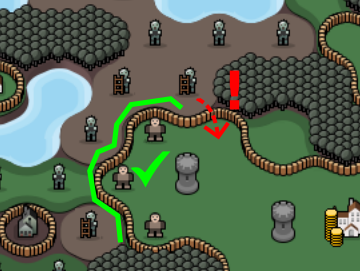

Towns and
Towns and  castles create a walled area around the surrounding tiles.
castles create a walled area around the surrounding tiles.
- When a unit within the walled area is overpowered, it will retreat to an adjacent tile instead of perishing!
- Destroying the town or castles destroys the protective wall as well.

- When a province has more than one town, the treasury of all towns is pooled together for purchasing units, but the coins are still stored in the individual towns.
- When collecting income, new coins produced by each tile first go to the closest unit that wasn't paid yet, then to the closest town.
- When you recruit a new unit, it's cost is paid from the closest town's treasury first (based on where you placed the unit). This means that you can control which town will pay for a new unit by choosing where to place it!

Zombies operate similar to bandits, but:
- If there's an adjacent unit, the zombie will turn it into another zombie!
- Zombies can't normally cross or infect through walls.
- A zombie can cross a wall when it has nowhere else to move and the tile on the other side of the wall is free.
- Zombies can never infect castles.
Haunted towns produce a new zombie every turn. To win a map with zombies, you need to not only defeat your rivals, but also clear all haunted towns!